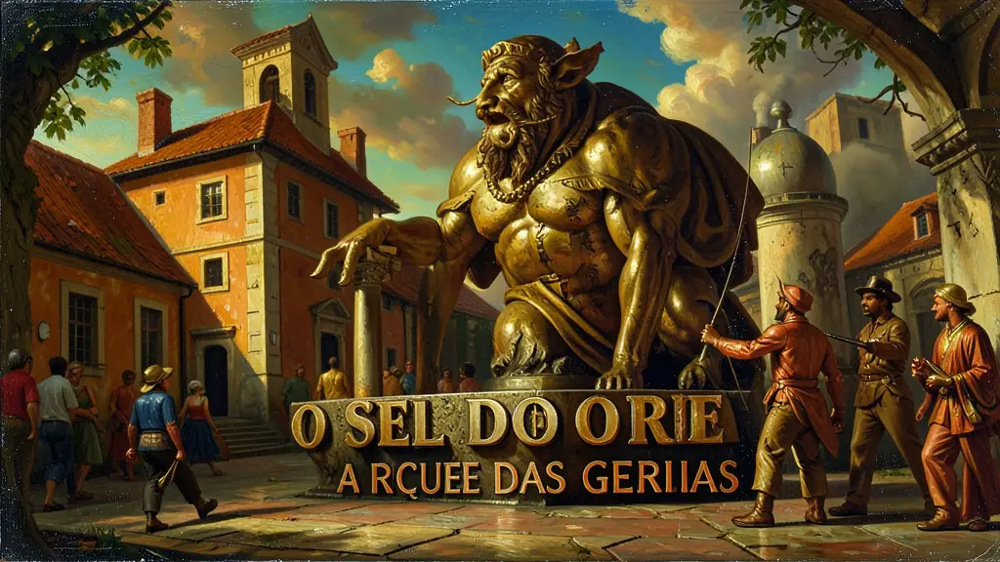
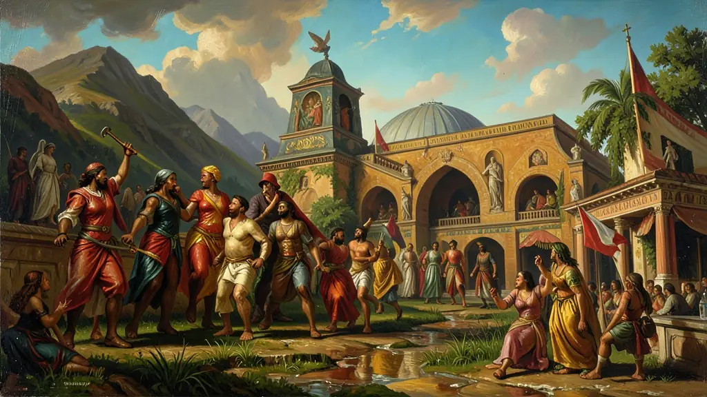
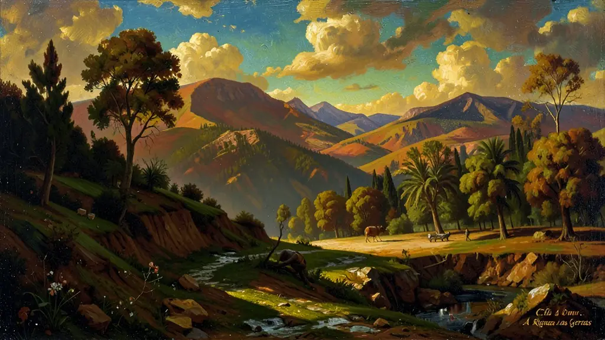

Capítulo 01
1. Casas de Fundição: O Selo do Rei
Para evitar o contrabando (como o famoso 'Santo do Pau Oco'), Portugal proibiu a circulação de ouro em pó. Todo o metal deveria passar pelas Casas de Fundição, onde o governo já retirava os seus 20% (o Quinto) e fundia o ouro em barras numeradas. Quem fosse pego com ouro em pó era deportado ou preso. Era a fiscalização mais rígida do mundo colonial da época, transformando o minerador em um eterno devedor da coroa.

Capítulo 02
2. Sociedade Urbana e Mobilidade
Diferente das fazendas de açúcar, onde só havia o senhor e o escravo, nas minas surgiu a classe média. Havia mascates, sapateiros, médicos e uma multidão de negros e mulatos alforriados que conseguiam comprar sua liberdade com o ouro encontrado. Surgiram as 'Irmandades Leigas', que construíam suas próprias igrejas suntuosas, competindo entre si para ver quem tinha o altar mais folheado a ouro da cidade.

Capítulo 03
3. O Barroco Mineiro: Ouro e Alma
A arte barroca em Minas era o exagero, a curva e o drama. Antônio Francisco Lisboa, o Aleijadinho, superou a dor física para esculpir os 12 profetas em pedra-sabão em Congonhas. A arte no ouro não era apenas decoração; era a forma como uma sociedade rica e tensa tentava falar com Deus, misturando temas bíblicos com a realidade brasileira. O Barroco no Brasil foi a nossa primeira grande contribuição para a cultura mundial.

Capítulo 04
4. O Rio de Janeiro: O Porto do Ouro
Até 1763, o Brasil olhava para o Nordeste. Com o ouro, o olhar mudou para o Sul. O Rio de Janeiro virou a porta de entrada de escravos e a porta de saída das riquezas das Gerais. A cidade cresceu de forma explosiva, tornando-se o centro administrativo da colônia. Sem o ouro, o Rio de Janeiro talvez nunca tivesse sido a capital do país, e a integração do território brasileiro teria sido muito mais difícil.
Capítulo 05
5. O Fim da Farra: Osgotamento e Derrama
Por volta de 1750, o ouro começou a escassear. Portugal não aceitava que a riqueza estivesse acabando e acusava os mineradores de contrabando. A invenção da 'Derrama' criou um ódio mortal dos mineiros contra a coroa. Dessa revolta tributária nasceu a Inconfidência Mineira, provando que o ouro poderia financiar templos e arte, mas também financiou o sonho da independência do Brasil.
A descoberta do ouro em Minas Gerais, no final do século XVII, provocou um deslocamento do eixo econômico e demográfico da colônia do Nordeste para o Centro-Sul. Diferente do açúcar, a mineração estimulou o desenvolvimento de um mercado interno vibrante e a formação de uma classe média urbana composta por artesãos, burocratas e profissionais liberais. A vida urbana nas cidades mineiras, como Vila Rica e Sabará, permitiu um florescimento cultural e artístico único, simbolizado pelo Barroco Mineiro de Aleijadinho e Mestre Ataíde.
O controle da Coroa Portuguesa sobre a mineração foi extremamente rigoroso, marcado pela criação das Casas de Fundição e a cobrança de impostos como o Quinto e a Derrama. Esse cenário de opressão fiscal e controle administrativo gerou as condições ideais para as revoltas emancipacionistas, como a Inconfidência Mineira. A elite intelectual das Minas, influenciada pelos ideais iluministas, passou a questionar os laços coloniais, embora o movimento fosse limitado por seus próprios interesses de classe e a manutenção da escravidão.
Sociedade do Ouro era marcada por uma mobilidade social ligeiramente maior que a do açúcar, embora ainda baseada no trabalho escravizado urbano e de 'faina'. O conceito de 'Inconfidência' deve ser estudado para o Enem como um marco da transição do sentimento colonial para o desejo de autonomia política. Além disso, a mineração permitiu que o Brasil se tornasse uma peça fundamental na geopolítica europeia, financiando direta ou indiretamente o desenvolvimento de Portugal e o pagamento de suas dívidas com a Inglaterra.
Fonte: SOUZA, Laura de Mello e. Desclassificados do Ouro: A Pobreza Mineira no Século XVIII. Rio de Janeiro: Graal, 1982.
Atividades interativas
Questões para fixar
O sistema de tributação colonial sobre o ouro, conhecido como 'Quinto', consistia em qual prática obrigatória?
A mudança da capital do Brasil de Salvador para o Rio de Janeiro, em 1763, deveu-se principalmente a qual fator?
Qual foi o principal motivo que levou o governo português a criar a Intendência das Minas e as Casas de Fundição?
Qual foi o impacto da mineração de ouro na sociedade colonial brasileira?
Qual foi o resultado da Derrama, medida implementada pelo governo português quando a meta de 100 arrobas anuais de ouro não era atingida?